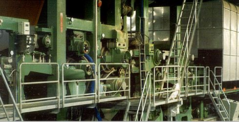
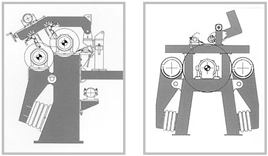

초지기계
CA-HEAD BOX
CA-WIRE SECTION

당사 WIRE PART는 기존 장망초지기의 단점을 개선시켜서 탈수량을 증가시켰으며 적은 진공도로 높은 탈수효과를 기대할 수 있으며 초지속도를 증가시키면서도 지합향상, 균일한 미세섬유 및 활석분포, 지분감소 및 표면의 거칠기 개선, 파열강도 개선, 공기저항도 개선, 박리 강도 증가의 효과를 가져올 수 있으며 기존 장망 초지기에 비해 저렴한 투자비로 생산량 증가 및 품질향상을 가져올 수 있습니다. 기존 장망초지기의 결점인 공기와 물을 동시에 탈수시킬 때 생기는 지필 파괴의 위험이 적고 고속운전이 용이하며 수요자의 요구에 부응하는 설계 및 제작을 하고 있습니다.
생산품목
- FOURDRINER PAPER MACHINE
- COMPACT WIRE PAPER MACHINE
- ON-TOP FORMER PAPER MACHINE
CA-SHORT WIRE SECTION
당사의 Short-wire는 저렴한 시설비로 설치 가능하며 기존의 결점을 완전보완하여 탁월한 지합구성, 속도증가, 균일한 섬유분포, 인장강도 및 품질향상에 에너지절감을 기대할 수 있으며 운전이 용이합니다. 특히 여러대의 당사 Short Wire를 붙여서 사용 할 수 있기 때문에 고평량 생산에 용이하며 다지층의 지료를 Felt에 의해 안전하게 이송되기 때문에 지절이 없고 고속운전이 가능합니다.
CA-ON TOP WIRE SECTION
FOURDRINIER TYPE PAPER MACHINE
- KIND OF PAPER A LINER & K LINER
- BASIS WEIGHT 120-250g/㎡
- DESIGN SPEED 450m/min
- L.N.PRESS φ1515 x 4900ml
CA-COMPACT WIRE SECTION
당사의 COMPACT WIRE는 저렴한 시설비로 설치 가능하며 기존의 결점을 완전 보완하여 탁월한 지합구성, 속도증가, 균일한 섬유분포, 인장강도 및 압축강도 증가로 제품의 생산성 및 품질향상에 에너지 절감을 기대할 수 있으며, 운전이 용이합니다. 특히 여러대의 당사 COMPACT WIRE을 붙여서 사용할 수 있기 때문에 고평량 생산에 용이하며 다지층의 지료를 모포에 의해 안전하게 이송되기 때문에 지질이 없고 고속운전이 가능합니다.
CA-ULTRA FORMER SECTION
당사의 ULTRA FORMER는 기존의 실린더몰드 표면에 덮혀 있는 금망 대신에 짧은 프라스틱 와이어를 사용하여 실린더몰드와 텐숀롤 와이어에 의해서 떠받쳐져 있으며 모포의 부드러운 쪽에 위치한 브이벨트에 의해서 이끌어진다. 포밍보드에 의해서 배수되는 물은 모포와 프라스틱 와이어 사이에 끼어져 있으며 실린더 몰드에 있는 잔류진공과 모포장력에 의해서 배수되며 일정한 수분, 평량이 유지되며, 힘이 주어지는 쿠치롤의 아주 작은 부분까지 이송된다. 이것은 진공박스에 의해서 모포까지 옮겨지며 다음 ULTRA FORMER까지 운반된다.
CA-EASY FORMER SECTION
당사의 이지포마는 종래의 이지포마를 연구보완하여 유속가감에 의한 톱스라이스에서 섬유분산을 일정하게 유지시키고 탁월한 지합형성과 균일한 섬유방향, 트림부의 평향유지, 에너지절감, 생산성향상, 보수 및 운전이 용이하고 기존 환망밧트보다 속도를 증가시킬 수 있습니다.
생산품목
- EASY FORMER
- NEW EASY FORMER
- TISSUE EASY FORMER
- VACUUM EASY FORMER
CA-PRESS SECTION

당사의 프레스는 광폭의 선압을 이용하여 기존 프레스보다 10%~25%의 탈수율을 증진시켜 광폭에서도 탁월한 효과가 있고 탈수율증대, 종이의 강도 증가, 생산성 향상, 양방향탈수로 표리차 최소화, 팩킹현상 최소화, 특히 라이너보드에 맞게 3번 프레스를 추가하여 최소의 표면처리와 최대의 인장 강도효과, 증기소비량 15%~20% 절감으로 원단위를 낮추고 저렴한 원료를 사용하여도 종이의 품질을 보장할 수 있습니다. 또한 모포의 교환이 용이하도록 설계, 제작되어 운전 및 보수가 용이합니다.
CA-LN PRESS SECTION
CA-L.N Press는 매우 강력한 Press로서 종래의 Press보다 지필 양면의 탈수 시간을 더욱 길게 실현하기 위해서 매우 고압의 Nip Pressure로 누르고, 상, 하 Felt와 2개의 직경이 큰 Roll을 가진 Press입니다. 특히 Press출구의 수분이 48%미만까지 도달합니다.
LONG NIP PRESS
- φ1515 x 4900ml
- NIP PRESSURE 500Kg/Cm
- OUT LET 수분 48%
CA-DRIVING SYSTEM SECTION
당사의 드라이빙 기어 시스템은 오픈기어시스템, 크로스기어시스템으로 제작되고 있습니다. 오픈기어 시스템은 소음과 기어의 마모를 없애기 위해서 주물기어를 혼용으로 사용하여 소음과 윤활이 극소화되어 보전 및 기계 가동율이 높아집니다. 크로스기어 시스템은 한군 전체를 구동하는 경우와 한군에 일부만 구동하는 최신형 구동방법으로 설계, 제작되고 있으며 기계의 효율을 높여주는 강제순환 윤활방식으로 구동되므로 최대 1500m/min의 속도에도 운전이 용이하고 소음이 극히 적습니다.
CA-SIZE PRESS & GLOSS CALENDER SECTION

당사의 드라이빙 기어 시스템은 오픈기어시스템, 크로스기어시스템으로 제작되고 있습니다. 오픈기어 시스템은 소음과 기어의 마모를 없애기 위해서 주물기어를 혼용으로 사용하여 소음과 윤활이 극소화되어 보전 및 기계 가동율이 높아집니다. 크로스기어 시스템은 한군 전체를 구동하는 경우와 한군에 일부만 구동하는 최신형 구동방법으로 설계, 제작되고 있으며 기계의 효율을 높여주는 강제순환 윤활방식으로 구동되므로 최대 1500m/min의 속도에도 운전이 용이하고 소음이 극히 적습니다.
CA-CALENDER SECTION
당사 CALENDER는 SOFT CALENDER , 2단에서 5단 CALENDER, SUPER CALENDER까지 설계, 제작하고 있습니다. 당사 CALENDER의 특징은 균일한 선압을 전달함으로 좋은 광택의 제품을 안정성있게 생산할 수 있으며 자동크라운콘토롤 시스템을 사용한 경우 더욱 좋은 제품을 생산할 수 있습니다.
CA-POPE REEL SECTION
당사의 릴은 완전공기제어방식으로 권치롤을 감아가면서 적절한 선압을 유지시켜 주므로 기계가동율을 높여줍니다. 고품질의 권치롤을 감아내기 위한 선압의 적절한 유지를 위하여 1차압과 2차압에서 에어실린더에 감기고 있는 권치롤과 릴드럼사이의 적절한 압력을 유지시켜 운전이 용이합니다. 세밀한 제어운전결과 권치롤의 밀도가 일정하게 되어서 리와인딩 작업 및 조작에 최대의 가동율을 보장합니다. 자동릴로딩 시스템은 운전이 편리하고 사용이 간편하도록 설계되었고 견고한 구조와 릴의 보수를 줄이고 비가동 시간을 최소한으로 함으로서 생산성향상에 도움을 줍니다. 사용자의 요구에 따라 전자동, 반자동 및 수동으로 조작이 가능하고 에어실린더 자동제어 스위치 및 충격흡수 장치가 후레임에 내장되어 있어 기계의 손상을 막아줍니다. 과도운전과 파손을 막기 위해서 자동제어시스템으로 보호되어 있어서 안전하게 운전할 수 있습니다.
AUTOMATIC SPOOL LOADING
운전이 편리하고 간편하도록 설계하여 견고한 구조와 릴의 보수를 줄이고 비가동 시간을 최소한으로 함으로써 생산성 향상에 도움을 줍니다. 사용자의 요구에 따라 전자동, 반자동 및 수동조작이 가능하고 에어실린더 자동제어 스위치 및 충격흡수 장치가 후레임에 내장되어 있어 기계의 손상을 막아 줍니다. 과도한 운전과 파손을 막기 위해서 자동 제어시스템으로 보호되어 있어서 안전하게 운전할 수 있습니다.
CA-RE WINDER SECTION

당사의 투드럼와인더는 1000mm에서 8500mm까지의 폭으로 와인딩을 가동하도록 설계, 제작되어 고품질, 고효율의 와인딩으로 수익성을 높여주며 다음과 같은 특징을 들 수 있습니다.
1. 자동화 시스템
1) 자동셋트 및 교환시스템
2) NC 스리터나이프의 전자동위치 선정
2. 온라인식 콘트롤로 지속적이고, 반복적으로 와인딩 작업
3. 수직, 수평NC 스리터나이프 부착으로 사용자의 요구에 따라 설계, 제작되고 있습니다.
4. 전자동화 시스템으로 운전이 편리하고 사용이 간편합니다.
5. 지필연결이 자동으로 되어 지속적인 와인딩 작업이 가능합니다.
CA-NC SUTTER SECTION
각 NC스리터가 30초 이내에 오차범위+0.1mm로 자동 셋팅이 되어 일정하고도 반복적인 슬리터나이프의 위치 변경이 이루어지며, 상, 하 나이프의 모터는 단독 D.C모터가 부착되어 이송바를 타고 이송되므로 조정이 용이하며 나이프의 수명을 연장시키고 나이프 변경시 지필을 중단시키지 않고 위치변경 프로그램을 입력할 수 있고 프로그램제어의 중앙집중화로 조작이 간편하고 지속적인 정밀함을 가져다 줌으로 사람의 실수에 의한 불량품 생산을 감소시켜 줍니다. 기존의 프로그램을 보완하여 보다 신속, 정확하게 제어할 수 있도록 설계, 제작되었고 가격이 저렴하며 기존 기계에도 쉽게 장착이 가능합니다.